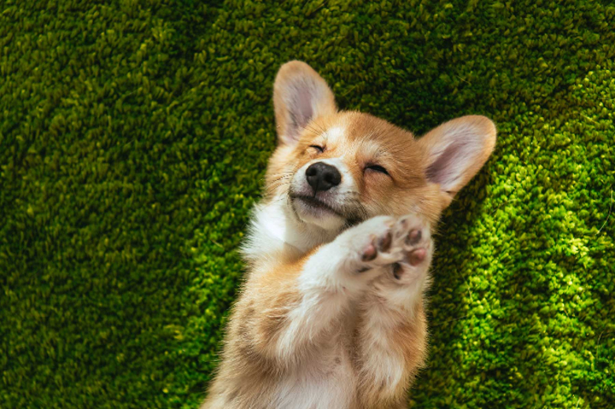
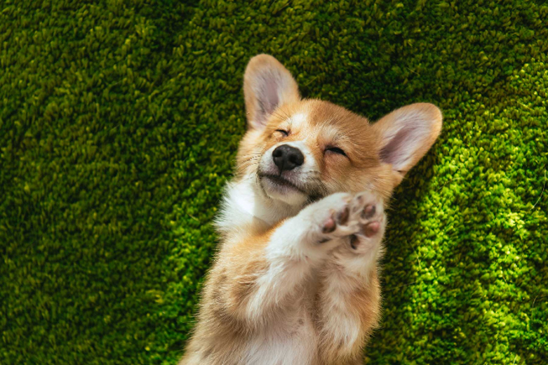
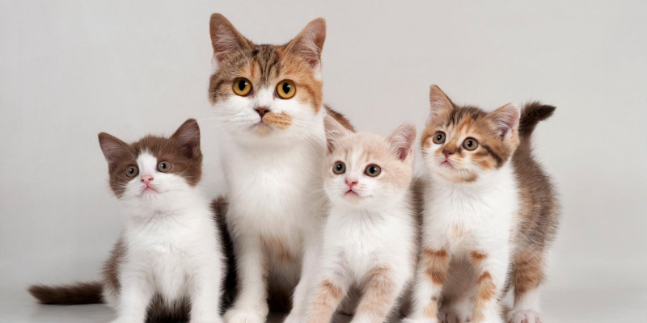
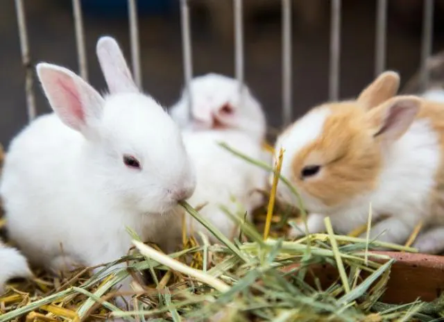
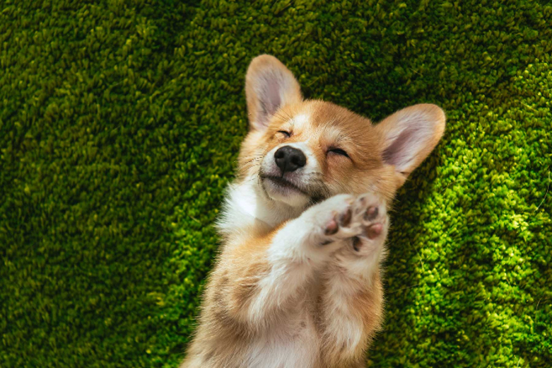

Charleston Pet Sitters is where we take care of your animals while your gone on vacation or at work. We treat your animals with respsect and with love we have fun we feed them with the food there sopposed to have. And there is no place like home for your pets we take any animals cats dogs bunnys even reptiles. And your first visit is free that F.R.E.E and your animal will come back home in a happy mood. Contact us at Charleston Pet Sitters.Com or learn more about us at are wepsite.

As you can see these are pictures of happy animals who had the best times in there lives. A bearded Dragon with a smile a dog with a smile and cats. 
We take care of your animal as if they were our children. And give them love God created these creatures because he didn,t wanted the world to be empty.


A world without animals is nothing but darkness animals are loving kind things.